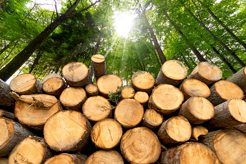

Conservation Areas
What are Conservation Areas?
Conservation Areas are places which are preserved due to their biodiversity or ecological signicance.Human activities have negatively impacted many ecosystems and earth as a whole.Global warming, pollution on multiple levels, climate changes, extinction of many species are few of the issues. It has, therefore, resulted in governments taking measures to combat these issues by establishment of protected areas. The flora and fauna in these areas are protected by the restriction on human activities such as poaching, cutting trees and use of fossil fuels.
Types of Conservation areas
The term 'protected area' includes forest areas,water bodies and extends over many nations irrespective of the borders for the purpose of protection of species. There are over 161,000 protected areas in the world (as of October 2010) which is almost 10 to 15 percent of the world's land area.
Benefits of Conservation areas

There are numerous advantages of setting up such 'protected areas'.The benefits range not ony for the various species growing in these but also to us humans.
Protection of Species
Many species of plants and animals need a specific ecosystem to grow and propagate and establishment of conservation areas act as a haven for the species driven to extinction or endangered status. This is exemplified by the changing of the status of 'Giant panda' from endangered to vulnerable.This feat was achieved by intense conservation efforts by the governments and is an evidence of the effectiveness of conservation areas in the preventing a species from extinction.
Reducing Carbon-dioxide Levels
The increase in human usage of fossil fuels and indiscriminate release of poisonous and noxious gases from different industries has resulted in the levels of Carbon-dioxide to increase considerably and caused global temperatures to rise.The preservation of forests in the protected areas help in reducing the carbon concentrations on the Earth, thereby delaying the global warming and climate change crisis.
Connecting to Nature
Some conservation areas allow limited entry to humans,allowing certain recreational activities like kayaking,camping,boating and serve as a place for humans to get away from the hustle and bustle of city life and enjoy connecting with nature in all its glory.This not only improves the mood of the people but also instills a positive attitude towards environment and how we can co-exist with nature peacefully.
Practical Reasons
Another reason to protect the ecosystem is a more practical one.We humans, are part of this ecosystem and are dependent on nature for air, water, soil for our crops, lands to rear animals and grow crops for food. The aggressive use of human activities such as poaching would upset the balance of the nature, thereby creating numerous issues such as flooding, polluted air and food shortage.
back to top
Challenges in maintaining Conservation Areas
The success and maintenance of conservation areas require not only support from the government but also from the public and communities near it. The segreggation of land for protection in the face of growing land shortage may create opposition from the people.The mounting pressure from oil and mining industries are all challenges to the preservation of conservation areas.
Inadequate inclusion of ecosystems
Poor representation of habitats Many ecosystems are not adequately protected due to the less importance given to those ecosystems such as certain lakes and oceans.
Scarcity of Money
This scarcity of money is more in developing countries and for protection of water bodies. There is a requirement to find new ways to establish networks to source enough funds for protected areas.
Human Invasion
The activities of logging, poaching , mining, and encroachment by human settlements and agriculture threaten the areas. Other activities which are a menace to the areas are pollution, uch as those leading to pollution, climate change, and the growth of alien species.
What can we do?
We are the most intelligent species on this planet and we can do a lot in contributing towards the preservation of ecosystems.
Gaining Knowledge of Environmental Issues
We can do this by being aware of the consequences of human activities on nature and can also become educators for the next generation.
Incorporating environment-protection activities in daily life
There are a lot of measures that we can incorporate in our daily lives such as not interfering in wildlife habitats especially nesting areas of birds,ensuring that pets do not disturb these areas,supporting local government programs that protect habitats and carpooling more often.
More information can be found at the following websites:
- Types Of Conservation Areas
- Benefits Of Protected Areas
- Ontario Conservation Areas
- People and Conservation
- Conservation Challenges
- What can we do?
back to top